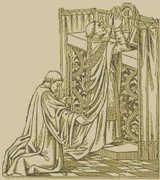

Veritatem Facientes in Caritate
Home Liturgy in General YouTube Channel
|
 |
This website deals with the Traditional Roman Catholic Liturgy,
which includes the useful resources in PDF format and downloadble free
of charges. The author of this website is Mr. Chavez Cyrillus Mariae Poon, a member of the Confraternity of St. Peter. He is also a experienced Altar Server and Master of Ceremonies in the Catholic Diocese of Hong Kong. You can visit his personal website by clicking here. For any enquiries please feel free to contact him by e-mail at chavezpoon@icloud.com. |